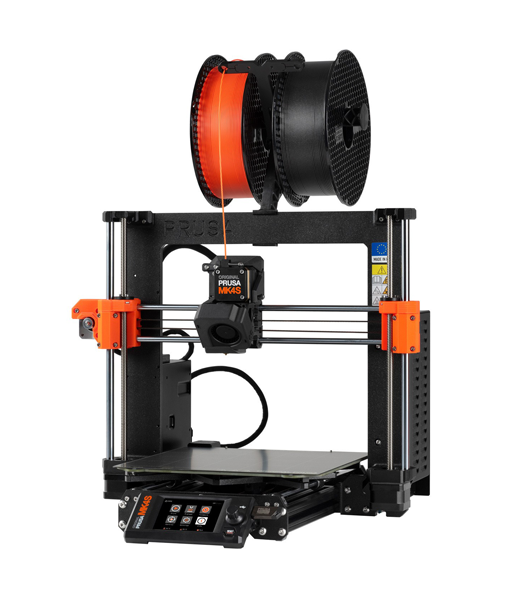

Impresora 3D Prusa MK4S

Constituyen el motor principal de la impresión 3D
La Prusa MK4S es una impresora 3D ideal para principiantes gracias a su facilidad de uso, fiabilidad y excelente calidad de impresión. Su sistema de autonivelación automática con sensor de carga, su asistente de calibración, y el software PrusaSlicer hacen que cualquier persona pueda imprimir sin experiencia previa. Desde el primer encendido, la impresora guía al usuario paso a paso, evitando los errores comunes y logrando resultados profesionales con poco esfuerzo.
Además, su funcionamiento silencioso, su mantenimiento sencillo y la gran comunidad que la respalda convierten a la MK4S en una impresora práctica, segura y lista para crear desde el primer día. Es perfecta para aprender los fundamentos de la impresión 3D mientras obtienes resultados de alta calidad.
Materiales que puede usar
La Prusa MK4S es compatible con una gran variedad de materiales gracias a su boquilla de alta temperatura y cama calefactable (dispone de un dispositivo para aumentar de temperatura). Esto te permite trabajar desde proyectos simples hasta piezas resistentes o flexibles.
Los materiales son:
| Material | Descripción | Temp. boquilla/cama | Dificultad | Recomendación |
|---|---|---|---|---|
| PLA | Fácil de imprimir, ideal para principiantes | 200 °C / 60 °C | Fácil | Figuras, prototipos, piezas decorativas |
| PETG | Más resistente y flexible que el PLA | 240 °C / 85 °C | Media | Piezas funcionales y exteriores |
| ABS | Resistente al calor, algo más difícil de imprimir | 250 °C / 100 °C | Difícil | Piezas mecánicas o expuestas al calor |
| ASA | Similar al ABS, pero más estable frente a rayos UV | 255 °C / 100 °C | Difícil | Piezas para exteriores |
| TPU | Material elástico y blando, además de ser flexible | 230 °C / 60 °C | Media | Protectores, juntas, fundas |
| Nylon | Muy resistente, duradero y algo flexible | 260 °C / 90 °C | Difícil | Engranajes, bisagras, piezas mecánicas |
Componentes principales de la Prusa MK4S
Antes de comenzar a imprimir, es importante conocer las partes más relevantes de la impresora:
| Componente | Descripción |
|---|---|
| Extrusor Nextruder | Sistema de extrusión avanzado con sensor de carga que detecta la presión durante la impresión. Permite una calibración automática precisa. |
| Boquilla (Nozzle) | Calienta el filamento hasta fundirlo y depositarlo capa por capa. Temperatura máxima: 300 °C. |
| Cama calefactora (heatbed) | Superficie donde se imprime el modelo. Mantiene el calor para una buena adherencia. Temperatura máxima: 120 °C. |
| Pantalla táctil a color | Interfaz principal. Permite navegar por menús, iniciar impresiones y cambiar parámetros. |
| Sensores de carga y autocalibración | Detectan automáticamente la posición de la boquilla y nivelan la cama sin intervención manual. |
| Fuente de poder y placa base 32 bits | Controlan todos los componentes eléctricos. |
| Estructura de aluminio y varillas Z | Aseguran precisión y estabilidad durante el movimiento del cabezal. |
Software de laminado: PrusaSlicer
El software PrusaSlicer convierte tu modelo 3D en instrucciones que la impresora entiende (G-code).
Pasos básicos:
- Abre PrusaSlicer.
- Selecciona la impresora: Original Prusa MK4S.
- Carga el modelo 3D (
Archivo → Importar → Modelo STL). - Ajusta posición y orientación del modelo (Move, Rotate, Scale).
-
Configura parámetros:
-
Material (ej. PLA)
- Altura de capa (0.20 mm estándar, 0.10 mm para más detalle)
- Relleno (20 %)
-
Soportes (si hay partes colgantes)
-
Pulsa Slice Now y guarda el archivo
.gcodeen USB.
Dato técnico: El archivo G-code contiene coordenadas (X, Y, Z), temperatura y velocidad de extrusión para cada capa.
Preparación y calibración inicial
- Enciende la impresora y abre el menú principal.
- Ejecuta Settings > Calibration > Selftest.
-
La impresora verifica:
-
Movimiento de ejes (X, Y, Z)
- Sensor de filamento
-
Calibración de extrusor y cama
-
Resultado: “Selftest Passed” si todo está correcto.
Gracias al sensor de carga, no es necesario ajustar manualmente los tornillos de la cama.
Cargar o cambiar el filamento
- Menú: Filament > Load Filament.
- Calienta la boquilla a la temperatura del material.
- Introduce el filamento hasta que el motor lo arrastre.
- Espera a que salga un hilo uniforme.
- Para cambiar de material: Unload Filament primero.
- Limpia exceso con pinzas.
Nota: No toques la boquilla caliente (>250 °C).
Iniciar una impresión
- Inserta la memoria USB con el
.gcode. - Menú: Print > USB Storage > [Archivo].
- Precalienta cama y boquilla.
- Observa la primera capa; ajusta Live Z Adjust si es necesario.
- La MK4S controla temperatura, velocidad y flujo automáticamente.
Consejo: Primera capa ligeramente aplastada; si no se adhiere, recalibra Z.
Retirar la pieza impresa
- Espera que la cama esté <35 °C.
- Dobla ligeramente la cama magnética extraíble para despegar la pieza.
- Usa espátula si es necesario.
- Limpia superficie con alcohol isopropílico.
Mantenimiento básico
- Limpiar la boquilla
- Lubricar varillas y guías cada 3 meses
- Revisar cables del extrusor y ventiladores
- Mantener filamento seco
- Actualizar firmware: help.prusa3d.com.
Resolución de problemas comunes
| Problema | Causa probable | Solución |
|---|---|---|
| La primera capa no se adhiere | Cama sucia o mal nivelada | Limpia la cama, recalibra el eje Z |
| Filamento no sale | Boquilla obstruida | Calienta y limpia con aguja o cambia el nozzle |
| Filamento se rompe | Humedad o mala calidad | Usa filamento seco y revisa la guía |
| Capas se desplazan | Cinta o poleas flojas | Ajusta correas y verifica ejes |
| Impresión se detiene | USB defectuosa o pérdida de energía | Reintenta desde otro dispositivo o usa función Resume Print |
Recomendaciones finales
- Comienza con modelos sencillos
- No apagues la impresora hasta que enfríe
- Mantén la zona de impresión limpia
- Consulta foros y perfiles de impresión en Printables.com.
Con la Prusa MK4S aprenderás los fundamentos reales de la impresión 3D sin complicaciones de calibración ni ajustes manuales.
Su diseño, sensores inteligentes y software optimizado te permiten concentrarte en crear y experimentar, no en reparar o corregir errores.